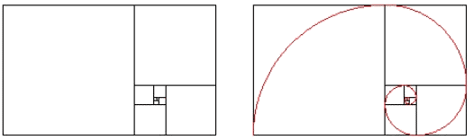

Sequência de Fibonacci
Na matemática, a sequência de Fibonacci é uma sequência de números inteiros, começando normalmente por 0 e 1, na qual cada termo subsequente corresponde à soma dos dois anteriores. A sequência recebeu o nome do matemático italiano Leonardo de Pisa, mais conhecido por Fibonacci, que descreveu, no ano de 1202, o crescimento de uma população de coelhos, a partir desta. Saiba mais sobre a sequência de Fibonacci
Sequência solicitada
A sequência de Fibonacci vai aparecer aqui...